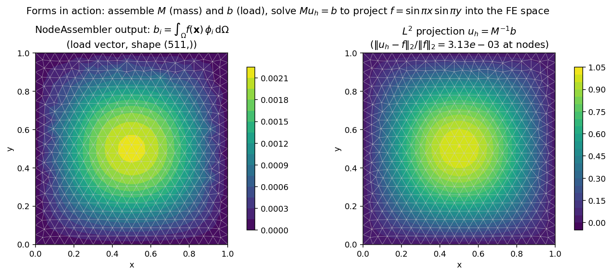
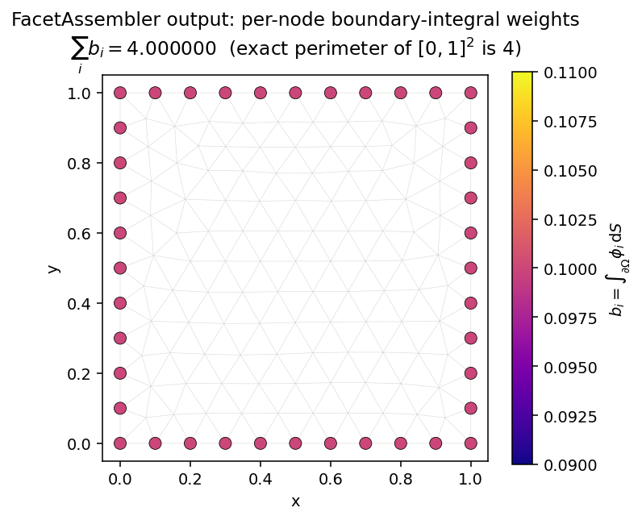

形式¶
在 TensorMesh 中求解偏微分方程，首先要写出两个数学表达式：
双线性形式 \(a(u, v)\) 对应刚度矩阵；线性形式 \(l(v)\) 对应载荷向量。在 TensorMesh 中，你只需把每个被积函数写成一个 Python 函数，库会自动处理数值积分、几何以及向稀疏矩阵或向量的全局散布（scatter）。这是大多数用户打交道的那一层——读完本页后，你就能用几行 Python 表达几乎任意有限元弱形式。
三个基类覆盖了常见场景。选用哪一个取决于你想装配的对象的 形状：
基类 |
数学对象 |
输出 |
典型用途 |
|---|---|---|---|
双线性形式 \(a(u, v)\) |
刚度、质量、弹性、对流扩散等 |
||
线性形式 \(l(v)\) |
一维 |
体力、\(L^2\) 投影的右端项、残差等 |
|
面积分 |
一维 |
诺伊曼面力、罚函数接触、罗宾边界条件、表面张力等 |
这三个类对 forward(...) 共享相同的分派约定，共享相同的 from_mesh(...) / from_assembler(...) 构造方法，以及相同的调用期数据传递机制。约定学一次，三个类用起来就像同一个工具。
弱形式约定¶
每个装配器子类都要重写 forward(...)。基类会检查你函数的参数 名称，并为每一个参数提供正确的张量，这些张量在每个单元的每个求积点上求值。其余的簿记工作——雅可比矩阵、基函数值、求积权重、全局散布——都在幕后自动完成。
参数名 |
提供来源 |
单点形状 |
说明 |
|---|---|---|---|
|
在某个求积点上的基函数本身 |
0 维 |
内层 vmap 会在 Element / Node 的 |
|
物理坐标下的基函数梯度 |
1 维 |
已经是物理空间中的梯度——\(J^{-T}\) 链式法则已为你自动应用 |
|
求积点处的物理坐标 |
1 维 |
从 |
|
你的节点张量插值到求积点上的值 |
|
例如传入 |
|
该场在求积点处的梯度 |
|
自动提供——按名称请求即可，无需额外传入任何东西 |
|
逐单元常量，或随（单元，求积点）变化的张量 |
|
适用于塑性中的历史变量或预先计算好的单元参数 |
|
全局标量 |
标量 |
原样传入（不经过 vmap 广播）；适用于时间步、罚函数权重等 |
在 forward 内部，你把被积函数写成一个普通的张量表达式。基类会：
把你的函数在所有单元和求积点上进行广播（使用
torch.vmap()），把返回的被积函数乘以 \(|\det J|\,w\)（每个求积点上的
JxW——参见 单元与求积），把结果散布到正确的全局位置上。
分派是 按名称而非按位置 进行的——forward(self, u, v) 和 forward(self, v, u) 是等价的。只有当你使用了无法识别的名称时约定才会失败；此时你会在调用时收到一个清晰的 ValueError，指出出错的参数。
小技巧
你永远不需要自己调用 forward。库会在 vmap 下针对每个单元的每个求积点调用它，因此即便是在 forward 中写一个简单的 print(u)，也会触发 \(N_e \times N_q\) 次，并打印出看起来很奇怪的被追踪张量。调试弱形式时，请设置 batch_size=1 并在仅含一个单元的网格上调用装配器，或直接用 K.to_dense() 检查装配结果。
ElementAssembler——双线性形式¶
对于 a(u, v)，编写一个返回被积函数的 forward(...)，然后调用 from_mesh(...) + ()。调用装配器会返回一个 SparseMatrix。
from tensormesh import Mesh, ElementAssembler
class LaplaceAssembler(ElementAssembler):
r"""a(u, v) = ∫ ∇u · ∇v dΩ"""
def forward(self, gradu, gradv):
return gradu @ gradv
mesh = Mesh.gen_rectangle(chara_length=0.15)
K = LaplaceAssembler.from_mesh(mesh)()
K.shape
# (143, 143)
对于标量双线性形式，整个用户流程就这么简单：一个 forward 方法、三行胶水代码，稀疏矩阵到手。
完整的调用签名为
__call__(points=None, func=None, point_data=None,
element_data=None, scalar_data=None, batch_size=-1)
其中所有参数都是可选的。当 points=None 时使用网格自身的 points；func 让你无需定义新子类即可替换为不同的被积函数（在双线性形式不断变化的反问题中很方便）；三个 *_data 字典把调用期输入传递给你的 forward 参数（参见 选择调用期参数的存放位置）；batch_size 是一个内存控制旋钮，详见 用 batch_size 进行内存分批。
随网格变化的参数：point_data、element_data、scalar_data¶
大多数弱形式涉及的系数不止 \(u, v, \nabla u, \nabla v\)。这三个调用期字典让你无需改动装配器类本身就能传入这些系数：
import torch
kappa_field = torch.rand(mesh.n_points, dtype=mesh.dtype) # spatially varying coef
class WeightedLaplace(ElementAssembler):
def forward(self, gradu, gradv, kappa):
# `kappa` has shape [] at each quadrature point — interpolated
# from the nodal values via the same basis functions used for u, v.
return kappa * (gradu @ gradv)
K = WeightedLaplace.from_mesh(mesh)(point_data={"kappa": kappa_field})
你也可以通过 __post_init__ 把参数固化进子类，它会在投影器和数值积分配置完成后运行一次：
class ScaledLaplace(ElementAssembler):
def __post_init__(self, alpha=1.0):
self.alpha = alpha
def forward(self, gradu, gradv):
return self.alpha * (gradu @ gradv)
K = ScaledLaplace.from_mesh(mesh, alpha=2.5)() # alpha is a constructor kw
两种写法都可行；根据参数的生命周期来选择（在多次求解中保持不变 → __post_init__；每次调用都不同 → 调用期字典）。
稀疏性：装配输出实际长什么样¶
SparseMatrix 是构建在 torch_sla.SparseTensor 之上的 COO 格式；你可以对它做 @、对它调用 .solve(b)，或把它转为稠密矩阵以便查看。下面两幅图展示了上述拉普拉斯刚度的稀疏模式，并与 同一个 网格上的二维弹性刚度并列对比：

图 8 标量拉普拉斯刚度对每一对相邻节点 (i, j) 有一个条目。二维弹性刚度具有 相同 的连接性，但每个条目现在是一个 \(2 \times 2\) 的分块（每个位移分量对应一行/一列），从而得到一个尺寸为四倍、非零元为十六倍的矩阵。库会根据你 forward 返回值的阶数自动检测这一分块结构——参见下一节。¶
向量值形式与分块 CSR 输出¶
对于向量值问题（线弹性、斯托克斯速度分块、向量形式的电磁学），每个节点携带 \(H > 1\) 个自由度。此时条目 \((i, j)\) 的双线性形式被积函数是一个 \(H \times H\) 的分块，装配后的矩阵形状为 \([N_\text{points}\, H,\, N_\text{points}\, H]\)。
库通过检查你 forward 返回值的 阶数 来判断是标量还是分块：
forward返回 2 维张量[B, B]→ 标量，输出形状为 \([N_\text{points}, N_\text{points}]\)；forward返回 4 维张量[B, B, H, H]→ 分块，输出形状为 \([N_\text{points}\, H, N_\text{points}\, H]\)。
对于二维线弹性，在某个求积点处的被积函数为
这正是内置的 LinearElasticityElementAssembler：
import tensormesh.functional as F
class Elasticity(ElementAssembler):
def __post_init__(self, E=1.0, nu=0.3):
self.E, self.nu = E, nu
def forward(self, gradu, gradv):
Ba = F.voigt_shape_grad(gradu) # [3, dim*dim] in 2D
Bb = F.voigt_shape_grad(gradv)
C = F.voigt_stiffness(self.E, self.nu, dim=gradu.shape[0])
C = C.to(dtype=gradu.dtype, device=gradu.device)
return Ba.T @ C @ Bb # [dim, dim] block
包含 143 个节点的整个二维网格会生成一个 \(286 \times 286\) 的刚度矩阵——参见上图右侧。本页关于标量问题所讲的一切都原封不动地适用于分块问题；唯一变化的是矩阵尺寸变大了。
NodeAssembler——线性形式¶
对于 \(l(v)\)，模式相同，但只有一个基函数，且结果为向量：
import math, torch
from tensormesh import NodeAssembler
class L2Source(NodeAssembler):
r"""b_i = ∫ f(x) φ_i dΩ for f(x, y) = sin(π x) sin(π y)."""
def forward(self, x, v):
return torch.sin(math.pi * x[0]) * torch.sin(math.pi * x[1]) * v
mesh = Mesh.gen_rectangle(chara_length=0.05)
b = L2Source.from_mesh(mesh)() # torch.Tensor [n_points]
调用签名：
__call__(points=None, func=None, point_data=None,
scalar_data=None, batch_size=1)
注意这里 不 接受 element_data（线性形式很少需要逐单元的临时数据），而且默认 batch_size 为 1，而非 ElementAssembler 所用的 -1。若要在此处禁用分批处理，请传入 batch_size=-1 或 batch_size=None；详见 用 batch_size 进行内存分批。
端到端验证：组合质量矩阵与载荷向量，把一个函数投影到有限元空间。质量矩阵 \(M\) 是对称正定的，因此无需狄利克雷条件就能求逆：
{kind=link}

图 9 左图：装配得到的载荷向量 \(b_i = \int_\Omega f\, \phi_i\, \mathrm{d}\Omega\)，以网格上着色的节点值形式绘制。右图：\(L^2\) 投影 \(u_h = M^{-1} b\)。约 3 × 10-3 量级的节点误差，与该网格上 P1 单元所预期的 \(O(h^2)\) 离散误差相吻合。¶
这是“弱形式 → 装配输出 → 求解场”这一最小闭环；包含边界条件和线性求解器选项的更通用工作流，是 边界条件 和 稀疏求解器 的主题。
最简单的载荷——常体力 \(\int c\, v\, \mathrm{d}\Omega\)——已作为 const_node_assembler() 内置提供；参见 内置装配器。
FacetAssembler——边界积分¶
对于面项——诺伊曼面力、罗宾边界条件、罚函数接触——FacetAssembler 在 面 数值积分（而非体数值积分）上执行相同的分派。其签名约定与 NodeAssembler 完全一致，区别仅在于基函数参数 u, v, gradu, gradv 显式保留其基函数维度（1 维 [B] 或 2 维 [B, D]）：
from tensormesh import FacetAssembler
class IntegrateOne(FacetAssembler):
r"""b_i = ∫_∂Ω φ_i dS — the per-node boundary-integral weights."""
def forward(self, v):
return v
mesh = Mesh.gen_rectangle(chara_length=0.1)
b = IntegrateOne.from_mesh(mesh)()
b.sum().item() # 4.0 (exact perimeter of [0,1]^2)
{kind=link}

图 10 装配得到的向量 b 仅在边界节点上有支撑（内部条目为零）。对所有条目求和可精确还原出周长。FacetAssembler 默认在 mesh.boundary_mask 上积分；向 from_mesh 传入 boundary_mask=... 可将其限制到带标记的子边界上。¶
调用签名：
__call__(points=None, func=None, point_data=None)
（面形式不支持 element_data、scalar_data 或 batch_size。）一个使用 ContactAssembler（一个面 能量 装配器）的罚函数接触完整示例见 示例画廊。
选择调用期参数的存放位置¶
三个字典——point_data、element_data、scalar_data——涵盖了“在网格上变化、且本身不属于基函数的数据”的各种情形。决策树如下：
你有一个值…… |
传入方式 |
它进入 |
示例 |
|---|---|---|---|
逐节点，带一个尾部场形状 |
|
|
定义在节点上的材料系数、上一次求解得到的位移场 |
逐单元（每个网格单元一个值） |
|
整个逐单元切片（形状 |
逐单元的杨氏模量、标记标签、任何在单元上为常量的物理量 |
随（单元，求积点）变化——仅 |
|
当前求积点处的值（形状 |
|
全局标量 |
|
该标量值（不经过 vmap 广播） |
时间步 \(\Delta t\)、罚函数权重 \(\kappa\) |
字典键的 名称 即成为 forward 中的参数名；该名称不得与内置名称（u、v、gradu、gradv、x、gradx）冲突。对于 point_data 的键，你还可以通过在名称前加上 "grad" 前缀来请求其梯度——无需任何额外的传递设置。
小心
随（单元，求积点）变化的 element_data 仅由 ElementAssembler.energy 自动识别（参见 基于能量的装配器（element_energy + .energy()）），装配矩阵的 ElementAssembler.__call__ 路径并不识别。如果你向 __call__ 传入形状为 [n_elem, n_quad, ...] 的张量，那么对每个单元交给 forward 的将是 整个 [n_quad, ...] 切片——而非逐求积点的值。就目前的矩阵装配而言，请把 element_data 严格保持为逐单元的形式。
特性对照表¶
这四条调用路径并非都支持每一个传递旋钮。当你不确定某个特性在手头的装配器上是否可用时，请参考此表：
特性 |
|
|
|
|
说明 |
|---|---|---|---|---|---|
|
✓ |
✓ |
✓ |
✓ |
在传入新的 |
|
✓ |
✓ |
✓（强制走 vmap 路径） |
✓ |
已 |
|
✓ |
✓ |
✓ |
✓ |
各处都遵循相同的节点插值约定 |
逐单元 |
✓ |
✓ |
✗ |
✗ |
|
随（单元，求积点）变化的 |
✗（整段切片） |
✓（通过 |
✗ |
✗ |
只有 |
|
✓ |
✓ |
✓ |
✗ |
面积分不接受它 |
|
✓（默认 |
✓（默认 |
✓（默认 |
✗ |
各类的禁用哨兵值参见 用 batch_size 进行内存分批 |
|
✗ |
✗ |
✓（单一单元类型，无 |
✗ |
条件不满足时回退到 vmap |
内置装配器¶
最常见的形式已经预先写好，省得你自己动手。它们都可以直接从 tensormesh 导入：
类 / 工厂 |
种类 |
计算内容 |
|---|---|---|
Element |
\(\int \nabla u \cdot \nabla v\, \mathrm{d}\Omega\)——拉普拉斯 / 扩散刚度 |
|
Element |
\(\int u\, v\, \mathrm{d}\Omega\)——质量矩阵（瞬态、\(L^2\) 投影） |
|
Element（向量） |
小应变各向同性弹性（参数 |
|
Element（能量） |
新胡克超弹性应变能密度 |
|
Element（能量） |
带各向同性硬化的 \(J_2\) 塑性，返回映射 |
|
Facet（能量） |
罚函数 / 障碍接触及面项的基类 |
|
Node（工厂） |
\(\int c\, v\, \mathrm{d}\Omega\)——均匀体力；返回一个类 |
|
Node（工厂） |
\(\int f(\mathbf{x})\, v\, \mathrm{d}\Omega\)——随空间变化的载荷；返回一个类 |
节点载荷的工厂式写法：
from tensormesh import const_node_assembler, func_node_assembler
ConstantLoad = const_node_assembler(c=9.81)
b = ConstantLoad.from_mesh(mesh)()
SineSource = func_node_assembler(lambda x: torch.sin(math.pi * x[..., 0]))
b = SineSource.from_mesh(mesh)()
之所以需要这些工厂，是因为 Python 的类对象无法被偏应用（partial application）；工厂会返回一个全新的子类，把常量或函数固化进 __post_init__。
基于能量的装配器（element_energy + .energy()）¶
对于非线性材料，最自然的定义量是 应变能密度 \(\Psi\)，而非残差或刚度：
ElementAssembler 通过一个并行方法 ElementAssembler.energy 支持这种模式，它会对 element_energy 重写进行积分，并返回一个标量 torch.Tensor。由于整条流水线都是可微的，E.backward() 会把内力向量填入 u.grad，而 torch.autograd.functional.hessian()（或一种适合 Krylov 方法的 Hessian-向量积）则给出切线刚度：
from tensormesh.assemble import NeoHookeanModel
mesh = Mesh.gen_cube(chara_length=0.2)
model = NeoHookeanModel.from_mesh(mesh, E=1e6, nu=0.45)
u = torch.zeros_like(mesh.points, requires_grad=True)
E = model.energy(point_data={"displacement": u})
E.backward()
F_internal = u.grad # internal force vector
对于已有闭式被积函数的 线性 与 双线性对称 问题，请使用基于矩阵的路径（__call__ 返回 SparseMatrix）；对于超弹性、塑性，以及任何通过对本构关系做自动微分能最简洁地表达物理的情形，请使用能量路径。
一个自定义形式：反应-扩散¶
在一个装配器中组合刚度与质量：
在 forward 内部不过是两项之和：
class ReactionDiffusion(ElementAssembler):
def __post_init__(self, kappa=1.0):
self.kappa = kappa
def forward(self, u, v, gradu, gradv):
return gradu @ gradv + self.kappa * (u * v)
K = ReactionDiffusion.from_mesh(mesh, kappa=2.5)()
参数顺序无关紧要——分派是按名称进行的。把 point_data 混入其中也只是多几个参数而已：
class WeightedReactionDiffusion(ElementAssembler):
def forward(self, gradu, gradv, u, v, kappa, reaction):
return kappa * (gradu @ gradv) + reaction * (u * v)
K = WeightedReactionDiffusion.from_mesh(mesh)(
point_data={"kappa": kappa_field, "reaction": r_field}
)
这一点可以直截了当地推广：只要返回形状符合 弱形式约定 中的约定，任何你能在 PyTorch 中写成单一代数表达式的东西都可以放进 forward。
用 batch_size 进行内存分批¶
对于非常细的网格或高阶单元，把所有逐单元的求积张量一次性放进内存可能装不下。装配器的 __call__ 接受一个 batch_size 参数，它把 求积 维度切分成若干块并逐块累加贡献：
K = LaplaceAssembler.from_mesh(mesh)(batch_size=4)
这是一个内存控制旋钮，而非问题级的向量化；后者请参见 批量化工作流。
如何禁用分批处理：
ElementAssembler——默认batch_size=-1，一次性处理所有求积点。NodeAssembler——默认batch_size=1，每次处理一个求积点；传入-1或None可禁用分批处理并一次性处理所有求积点。FacetAssembler——不暴露batch_size；面积分足够小，至今无需分批处理。
任何正整数 batch_size 都会得到与未分批调用相同的装配结果。当 batch_size 不能整除逐单元的求积点数时，循环会在末尾多跑一个（较短的）批次；大于 n_quadrature 的值则直接退化为单个完整批次。
用 compile 加速 NodeAssembler¶
NodeAssembler 提供了一条快速路径，它绕过 torch.vmap()，转而使用直接的广播运算。通过链式调用 compile() 即可启用：
class Ones(NodeAssembler):
def forward(self, v):
return v
# Default — uses vmap dispatch (predictable, slowest startup):
asm = Ones.from_mesh(mesh)
b = asm()
# Compile mode — bypass vmap, use direct broadcast (5–30× faster in tight loops):
asm = Ones.from_mesh(mesh).compile()
b = asm()
# Disable for debugging (so breakpoints inside `forward` fire as expected):
asm.reset_compile()
mode 参数还控制是否在其之上叠加 torch.compile："disable"（默认）只做 vmap 绕过，"default" / "reduce-overhead" / "max-autotune" 则以相应的优化级别启用 torch.compile。对大多数用户而言，默认的 compile()（不含 torch.compile）已经能带来很大的加速，且没有预热开销。flat_mode() 是 compile(mode="disable") 的同义写法。
只有当以下 三个条件全部 满足时，快速路径才会启用；若其中任何一个不满足，调用会透明地回退到 vmap 路径：
已对该装配器调用过
.compile()（is_compiled返回True）。网格恰好只有一种单元类型（
len(self.element_types) == 1）。即便启用了 compile，混合单元网格仍走 vmap 路径。调用时未传入
func=覆盖。调用asm(func=alt_form)始终走 vmap 路径，这样你就能在不重新编译的情况下替换被积函数。
备注
快速路径用显式的广播运算取代 vmap，这对 forward 提出了更严格的约定：当 v / gradv 带着前导的 [n_quadrature, ...] / [n_element, n_quadrature, ...] 维度（而非以标量形式）到来时，它仍必须能正常工作。通过逐元素运算来组合这些张量的闭式形式（return v、return gradv @ vec）可原样工作；而对逐求积点输入进行索引或重塑的形式可能需要一些广播上的调整，或者干脆留在默认的 vmap 路径上更简单。快速路径也不会自动提供 x；如果你需要坐标，请用自定义名称把它传进来（point_data={"xy": mesh.points}，然后 forward(self, xy, v)）。
编写你自己的装配器¶
本库的设计假定大多数用户迟早都会编写自定义装配器。下面是实用的操作步骤。
1. 根据你要装配的对象挑选基类——矩阵（ElementAssembler）、载荷向量（NodeAssembler）或边界项（FacetAssembler）。如果被积函数最自然地表示为一个标量能量密度，那么请使用 ElementAssembler 上的 .energy() 路径，而不要手写残差 + 刚度——自动微分会替你完成。
2. 实现 ``forward(self, ...)``。只使用 弱形式约定 中列出的参数名（u、v、gradu、gradv、x、gradx），外加任何你打算通过 point_data、element_data、scalar_data 传入的键。以正确的阶数返回单点被积函数：标量问题返回 [B, B]（Element）或 [B]（Node / Facet）；分块问题返回 [B, B, H, H] 或 [B, H]。
3. 把参数存放在 ``__post_init__`` 中，而非 __init__。基类的 __init__ 负责配置投影器、变换和边；__post_init__ 紧随其后运行，并接收构造函数的关键字参数，self.E = E 这类语句就该写在这里。
4. 通过 from_mesh() 构建装配器并调用它。 构造函数的关键字参数会被转发给 __post_init__。该实例是可调用的（并且是一个 torch.nn.Module，因此 .to(device) / .double() 都能直接生效）。
一个涵盖两种写法的自包含模板：
from tensormesh import Mesh, ElementAssembler
class MyForm(ElementAssembler):
r"""a(u, v) = ∫ α ∇u · ∇v + β u v dΩ.
α is a per-element coefficient, β a global scalar.
"""
def __post_init__(self, beta=1.0):
self.beta = beta
def forward(self, gradu, gradv, u, v, alpha):
return alpha * (gradu @ gradv) + self.beta * (u * v)
mesh = Mesh.gen_rectangle(chara_length=0.1)
alpha = torch.rand(mesh.cells["triangle"].shape[0], dtype=mesh.dtype) # per-cell coef
K = MyForm.from_mesh(mesh, beta=2.5)(
element_data={"alpha": alpha},
)
调试技巧
如果分派失败并报
ValueError: <name> is not supported，说明该参数名既不匹配任何内置名称，也不匹配你在数据字典中传入的任何键。请检查诸如grad_u与gradu、或displacment与displacement之类的拼写错误。如果你在
forward内部遇到形状错误，请设置batch_size=1并在仅含一个单元的网格上调用装配器；这样传入的张量就足够小，便于print和分析。请记住forward是 在 vmap 下 运行的——你看到的张量已经去掉了前导的单元 / 求积点维度。若要对装配输出做合理性检查，可以计算一个已知的积分：对于单位函数，
MassElementAssembler应给出1^T M 1 == area；返回v的FacetAssembler求和后应等于边界长度；作用于线性场u = x的LaplaceElementAssembler应给出零残差。tests/assemble/test_facet.py文件中就有一整套这样的闭式检查。
若需涵盖超弹性、塑性、接触和流体问题的详尽示例，请参见 示例画廊。